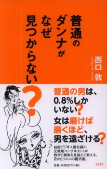

西口 敦(にしぐち あつし)
高松高校 昭和62年卒
(Last updated:2014.5)
プロフィール
東京大学法学部卒業
外資コンサルティング（A.T.カーニー、ボストン・コンサルティング・グループ）や金融業界（長銀、アメックス、UBS）を経て、少子化にストップをかけるべく結婚情報サービス会社である株式会社オーネットに転身。
婚活最前線での日々の気づきを記した
『婚活ブログ ニッポンの婚活ビジネス最前線』（http://plaza.rakuten.co.jp/anishi01/）が人気を博す。

2011年9月 株式会社西口敦事務所を立ち上げ、婚活支援だけに止まらず、経営コンサルティング（各種戦略の策定および実行支援）や人材育成支援（幹部育成など各種の研修・講演の企画・実行）を行っている。
著書
『普通のダンナがなぜ見つからない』 文芸春秋(Amazon)
普通のダンナがなぜ見つからないのか。
それは普通の男は０．８％しかいないから。
結婚ビジネス最前線の元戦略コンサルタントが、数字と現実を見据えて教える、目からウロコの婚活術！